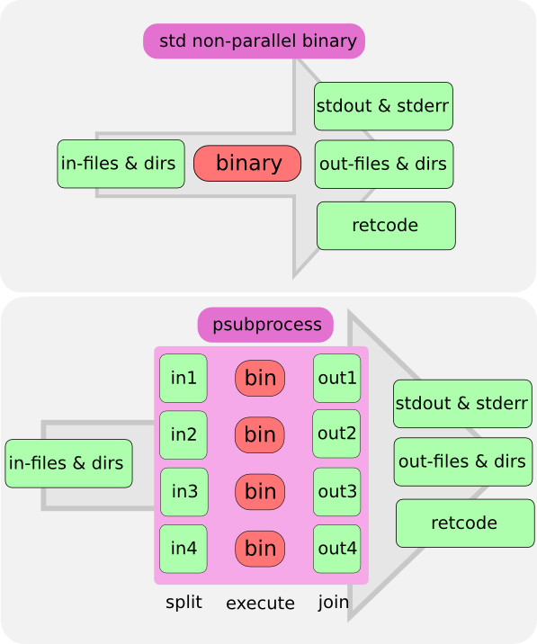
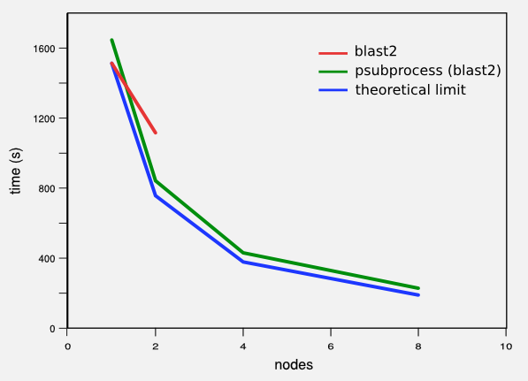

psubprocess is a naive and easy to use parallelization solution. With psubprocess you can parallelize a non-parallel program with no modification at all. This can be done for every non-parallel software created to analyze a set of items (like sequences or text lines). Also the analysis carried out for every item should be independent of the analysis for the other items.
psubprocess takes the easiest path to parallelize the given the given command. It looks for the input file, it splits the input file into several smaller files, runs the command for every one of these new input files, waits for all these commands to finish and it joins the output files into one big output file.
The run_in_parallel.py script is the command line interface to psubprocess. The easiest way to run it is:
$ run_in_parallel.py -c 'cmd_to_parallelize -i input.txt output.txt'
You can also set the number of subprocesses to create using the nsplits option:
$ run_in_parallel.py -c 'cmd_to_parallelize -i input.txt output.txt' -n 4
In fact the last two command wouldn’t work the way we expect to, because run_in_parallel would assume that there is no input file to split and it would create four subprocesses that would run the command:
$ cmd_to_parallelize -i input.txt output.txt
But that is not what we want. run_in_parallel should recognize input.txt as an input file and output.txt as an output file. Also it should split the input file into four smaller input files and launch the subprocesses:
$ cmd_to_parallelize -i input_part1.txt output_part1.txt
$ cmd_to_parallelize -i input_part2.txt output_part2.txt
$ cmd_to_parallelize -i input_part3.txt output_part3.txt
$ cmd_to_parallelize -i input_part4.txt output_part4.txt
After waiting for all four subprocesses to finish it would have to join the four outputs into the real output. The most naive way to do it would be:
$ cat output_part1.txt output_part2.txt output_part3.txt output_part4.txt > output.txt
$ rm output_part1.txt output_part2.txt output_part3.txt output_part4.txt
$ rm intput_part1.txt input_part2.txt input_part3.txt input_part4.txt
This is basically what run_in_parallel.py does under the hood. To do it run_in_parallel.py needs several pieces of information:
- The command to run.
- The input file.
- How to split the input file into items.
- The output file.
- How to join the output file (optional).
- How many subprocesses to run (optional).
The easiest way to tell psubprocess about this information is to use the command line syntax that the run_in_parallel.py script understands. After reading this syntax section you will come up with the correct way to do it:
$ run_in_parallel.py -c 'cmd_to_parallelize >#-i# input.txt <#output.txt#' -n 4
Is the performance of the non-parallel software boosted by psubprocess in a PC-cluster? To test it we have used the standard NCBI version of the blast2 binary in 4-node cluster with 2 CPUs per node. blast2 is capable of using the 2 nodes of one node with its own internal parallel code, but with doCluster the 8 CPUs available in the PC-cluster are put to work.
As is clearly seen in the figure the gain offered by psubprocess in this scenario is not far from the maximum theoretical limit. When 4 CPUs are used the time used to complete the job is reduced by a 3.5 factor and with 8 we obtain an improvement factor of 6.6. This penalty is associated to the cost of splitting and joining of the big text files, used by blast2 as input and output, and the network communication between the different nodes.
Joe has a 8-node PC-cluster and he needs to create 1000 phylogenetic trees using phylip. He could split the input file into 8 smaller new input files, run 8 jobs, one on every node, wait for the 8 output files and join them. It would be better to use his computational power without all that trouble.
Maurice has a PC with a 2-way processor and he wants to clean up some sequences using seqclean as efficiently as possible, but seqclean is not prepared for parallel execution.
Bertha has programmed a script to process sequences. Now she wants to use it in a parallel environment with as little hassle as possible.
Charlie maintains a web service that has grown and it is stressing the server too much, he has an spare computer and he would like to use all its computational power without modifying the scripts that power the web server.
psubprocess can learn which is the input file to be split and the output file that will collect the result using some special notation in the command to be run in parallel. To inform about which are the input and output files we use:
- for input: >#option#
- for output: <#option#
This syntax will inform psubprocess that these options specify parameters that should be taken into account when the subjobs are split and joined. The input and output files that are not to be affected by the splitting process should not be marked this way. Any command line option not marked in this way will be passed to the generated subprocess unmodified.
If the option starts with an hyphen (“-“), psubprocess will understand that the file is the next item in the command line, otherwise it will assume that we are dealing with a positional parameter and that the file is the one marked by this special syntax. So both “>#-i#” and “>#input.txt#” mean that input.txt is the input file to split. The first way should be used with non-positional options and the second one with positional options. Two correct uses would be:
cmd_to_parallelize >#-i# input.txt
cmd_to_parallelize >#input.txt#
But an incorrect use would be:
cmd_to_parallelize -i >#input.txt#
We can also use this syntax to inform about other information regarding the job. For instance we can define how the items in the input file are divided. For instance let’s imagine that the input file is a fasta file:
>seq_1
GCATGCTAGTCGTATGCTAGTCGTAGTCAT
>seq_2
TCGTATGCATGCTATGCTATCTATGCTATT
ATGCGACTGATGCTATGACT
(...)
>seq_n
TGCTGATGCTGATCTGATGCTGGATCTTGT
TCGATGTCAGTT
In this case we want the input file to be split between items. In these fasta files an item begin every time a “>” is found. We would tell psubprocess to split in the line with the “>” symbol with the following syntax:
cmd_to_parallelize >splitter=>#-i# input.txt
psubprocess will consider the items to be starting at the lines that have the string set by the splitter parameter. In some cases it is not possible to define the start of an input file item just by looking for an string. In that case a more complex algorithm could be defined and used. psubprocess can split some files like the one with the format fastq. To split a fastq file we would do:
cmd_to_parallelize >splitter=fastq#-i# input.txt
In this case psubprocess would understand that the splitter parameter tells the fastq splitting algorithm to be engaged and it wouldn’t look for the “fastq” string in every line.
There is an alternative, and more powerful, way of defining all this information, the cmd_def parameter. This way is more verbose. If you want or need to use it, please, contact us.
This scripts allows to parallelize a job. Its options are:
$ run_in_parallel.py -h
Usage: run_in_parallel.py -c "command"
Options:
-h, --help show this help message and exit
-n SPLITS, --nsplits=SPLITS
number of subjobs to create
-r RUNNER, --runner=RUNNER
who should run the subjobs (subprocess or condor)
-c COMMAND, --command=COMMAND
The command to run
-o STDOUT, --stdout=STDOUT
A file to store the stdout
-e STDERR, --stderr=STDERR
A file to store the stderr
-i STDIN, --stdin=STDIN
A file to store the stdin
-d CMD_DEF, --cmd_def=CMD_DEF
The command line definition
-q RUNNER_REQ, --runner_req=RUNNER_REQ
runner requirements
The only required option is command. This options is used to pass psubprocess the command that should be parallelized. The command has to be written the syntax explained in the command line syntax section.
nsplits sets the number of sujobs that will be created. If we set it to four, the input file will be split in four little files and for processes will be run in parallel. The default is to create as much as jobs as cpu cores are available.
stdout, stderr and stdin are used to tell psubprocess about the output and input files to be used as stdout, stderr and stdin. If these options are not set, the stdout and stderr will be written to stdout and stderr.
cmd_def can be used if we don’t want to use the command line syntax. In this case all the information is set using a python dict format. If you want to use it, please contact us or look at the code.
By using the runner option we tell psubprocess to run the jobs using the condor cluster queue system. By default condor is not used and the subjobs are not migrated to other machines.
A complete example would be:
$ run_in_parallel.py -c "cmd_to_parallelize >#-i# input.txt >"output.txt""
psubprocess is written in python. At this time, we have tested it only in Linux systems. If you test it in other platforms or you want to port it please let us know about it.
To install it just download it, uncompress it and run:
$ python setup.py install
psubprocess is free (as free beer) software and it is distributed under the GPL version 3 license.
We have written this software because we need something like that for our day to day job and we release it with the hope that it can be useful for other people. If you use it please tell us what you like and dislike about it.
If you want to improve psubprocess we are open to your suggestions and specially to your code. This is free software, so join the wave.